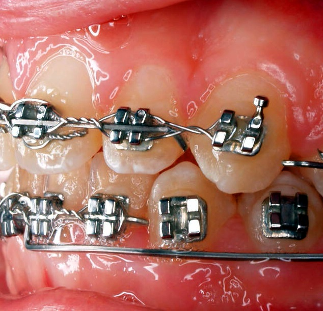
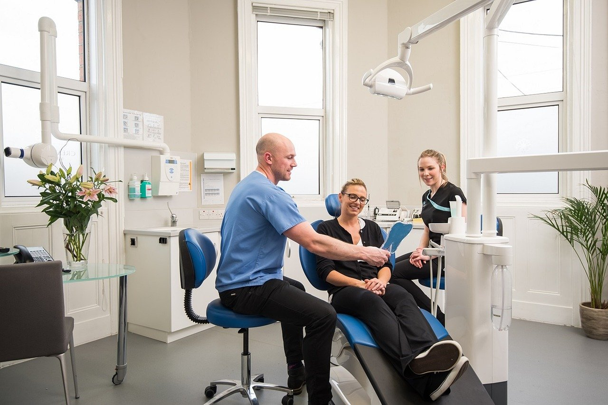

Orthodontic assessments
Initial review of tooth position, bite, jaw alignment concerns, and overall smile goals.
Services
This page highlights the main orthodontic care topics patients commonly want to understand before they book or attend an initial consultation.

Initial review of tooth position, bite, jaw alignment concerns, and overall smile goals.
Guidance on timing, records, expected steps, and practical recommendations after evaluation.
Planning and follow-up for fixed orthodontic appliances when clinically appropriate.
Support during developmental years when alignment changes may be most effectively addressed.
Orthodontic options for adults who want improved function, comfort, or appearance.
Ongoing review appointments aimed at protecting results after active treatment.
Planning care
A consultation helps clarify the concern, discuss the stage of development, and map out the most practical next step for treatment and follow-up.
